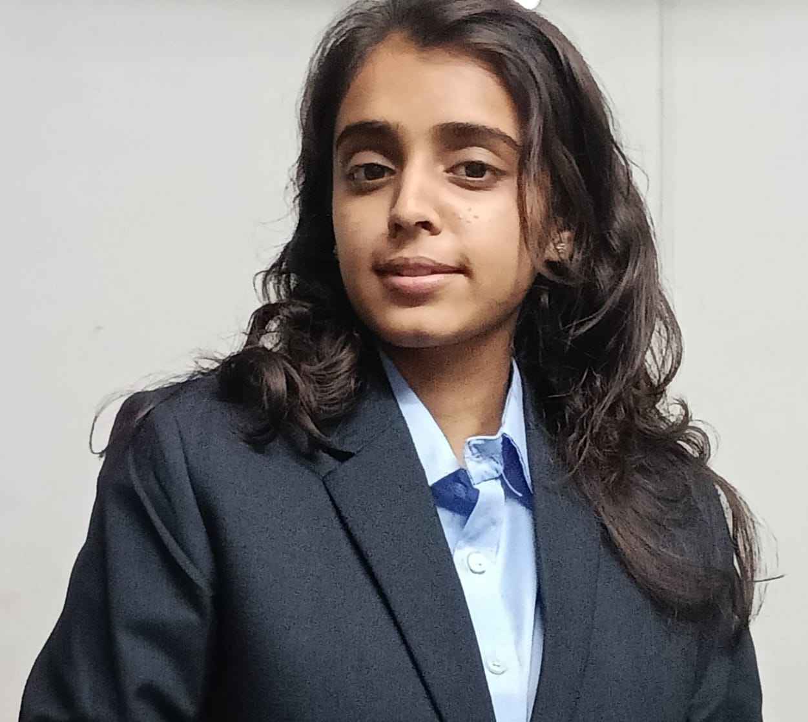

PRADHAKSHINI.P

coimbatore
Email:kit27.ad40@gmail.com||phone:+91 8248601404
linkedin.com/in/pradhakshini||Github.com/pradhakshini
CAREER OJECTIVE
A passionate and driven B.tech student in Artificial Intelligence and Data science eager to leverage analytical skills,problem_solving abilities,and technical expertise in software development and data analysis to contribute to neat world projects.
EDUCATION
KalaignarKarunanidhi Institute of Technology coimbatore
B.Tech Artificial Intelligence and Data Science
sep 2023-May 2027|CGPA:8.73
coursework: Web development,Data Science,Python,Artificial Intelligence,Machine learning,SQL
PROJECTS
- web scraper:Extracted product data from e-commerce websites using Python and beautifulsoup,Parsed HTML and stored data in csv files.
- medical DBMS: Designed a database for hospital management using MYSQL,implemented by ER modals.
- book recommendation system:Built a recommendation engine
- Fraud detection: trained ml modals to detect spam or not
- air quality monitor(IOT): Development of Arduino-based system to monitor and send alerts.
SKILLS
- Programming Languages: Python (Advanced), C++ (Intermediate), C (intermediate)
- Tools & Libraries: NumPy, Pandaa, Scikit-learn, OpenCV. Beautifulsoup, MySQL
- Concepts: OSA, OOP, DBMS, Web Development, Machine Learning
- Soft Skills: Teamwork, Communication, Critical Thinking
ACHIEVEMENTS & ACTIVITIES
- CodeChef: 983;ating (D.v 4); course on commuation, leadership, and teamwork
- NPTEL-Design Thinking: Elite Certificate focusing on creative probern-solving
CERTIFICATIONS
- NPTEL-Soft Skills: 8-week course on communication, leadership, and teamwork
- NPTEL-Design Thinking: Elite Certificate